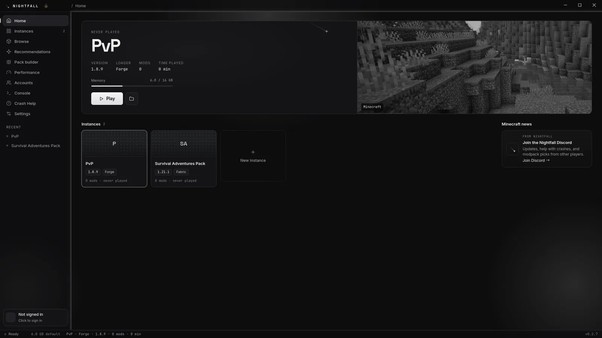

Press Play.
Keep every frame.
Nightfall is a free launcher for Minecraft: Java Edition, built for max FPS. Modrinth and CurseForge are built in, every mod is stored once on your disk, and a share code gives a friend your exact setup.
Nightfall runs on Windows and Linux PCs. Open this page on your computer to download it.
Microsoft sign-in is built in and waiting on Mojang's approval.

Twelve things it does well.
Each one can be switched off, and none of them runs in the background while you play.
Built for max FPS
A performance preset matched to your version (Sodium, Lithium, FerriteCore and more), tuned Java flags, and the launcher pauses itself while you play.
Modrinth and CurseForge
Search mods, modpacks, shaders, resource packs and datapacks. Dependencies install themselves, and .mrpack and CurseForge .zip packs import.
Shared mod storage
Every mod, resource pack and shader is stored once and linked into each instance that uses it. Ten packs with Sodium keep one copy.
Share codes and QR
Turn an instance into an NF1 code or a QR code. A friend pastes it and gets the same version, loader and mods.
Import from other launchers
Bring your instances over from Prism, MultiMC, CurseForge, the Modrinth App, ATLauncher, GDLauncher and more.
Every loader you need
Vanilla, snapshots, Fabric, Quilt, Forge and NeoForge, plus old alpha and beta versions and LiteLoader, each with the right Java.
Mod toggle in the game
Press the N button on the title screen, switch mods on or off, then Apply & Restart. You're back in a few seconds.
Crash help that explains
114 known crashes explained in plain words, with fixes in order. The crash checker also names the mod most likely to blame.
Shared game settings
Keybinds, controls and audio follow you across instances. FPS options like render distance stay with each pack, and any pack can keep its own settings.
Updates itself
Install once. New versions download quietly in the background and install when you close the launcher.
Windows and Linux
A Windows installer, plus an AppImage for Linux. Windows gets the most testing.
Accessible, in your language
High contrast, reduced motion, a dyslexia-friendly font, UI scaling and full keyboard navigation, in 23 languages.
Built for max FPS. Then measured.
The launcher gets out of the way while you play, and every in-game feature has a cost budget: if one takes more than 2% of a frame, it gets optimized before it ships.
- Performance presetOne click adds Sodium, Lithium, FerriteCore and other performance mods that match your version and loader.
- The right Java, tunedEach version gets the Java it needs, sensible memory and garbage-collector flags we tested against a standard launch.
- The launcher goes quietWhile the game runs, the launcher stops its animations and background work, and it never installs an update mid-game.
- Your FPS options stay putRender distance, FPS limit, VSync and graphics are never copied between instances, so a heavy pack can't slow down a light one.
- The faster graphics cardOn laptops, Nightfall asks Windows to use the faster GPU, and Performance check shows which one the game will get.
What we measured
Measured on 25 October 2026 on our test machine: a 54-mod Fabric 1.21.1 pack, fixed seed and camera path, 3 rounds. Your FPS depends mostly on your graphics card, its driver and your video settings.
A closer look.
Real screenshots from the launcher and the game.


Modpacks worth trying.
Popular packs from Modrinth that we like. Search a pack's name in Nightfall's modpack browser to install it.

Fabulously Optimized
Better graphics and smoother FPS with options you already know. A great first pack.
View on Modrinth
Vanilla Perfected
Vanilla Plus mods and packs that improve the game without changing how it feels.
View on Modrinth
Prominence™ II: Hasturian Era
A story-rich RPG pack with a talent tree, artifact weapons and boss fights.
View on Modrinth
Cobblemon Official Modpack [Fabric]
The official Cobblemon pack: catch, train and battle creatures in Minecraft.
View on ModrinthHow Nightfall compares.
An honest look at the launchers people switch from. We only list what Nightfall really does.
| Feature | Nightfall | Official | Prism | Modrinth App | CurseForge | ATLauncher | GDLauncher |
|---|---|---|---|---|---|---|---|
| Microsoft sign-in | Yes* | Yes | Yes | Yes | Yes | Yes | Yes |
| Separate instances | Yes | Partial | Yes | Yes | Yes | Yes | Yes |
| Fabric and Quilt | Yes | — | Yes | Yes | Yes | Yes | Yes |
| Forge / NeoForge | Yes | — | Yes | Yes | Yes | Yes | Yes |
| Automatic Java per version | Yes | Yes | Yes | Yes | Yes | Yes | Yes |
| Modrinth mods with dependencies | Yes | — | Yes | Yes | — | Partial | Yes |
| CurseForge mods and modpacks | Yes | — | Yes | — | Yes | Yes | Yes |
| Modrinth modpacks (.mrpack) | Yes | — | Yes | Yes | — | Partial | Yes |
| One-click performance mods | Yes | — | — | — | — | — | — |
| Toggle mods from inside the game | Yes | — | — | — | — | — | — |
| Crash viewer that explains the crash | Yes | — | Partial | Partial | — | — | Partial |
| Shared settings across instances | Yes | Partial | — | — | — | — | — |
| Launcher updates itself | Yes | Yes | Yes | Yes | Yes | Yes | Yes |
| No ads | Yes | Yes | Yes | — | — | Yes | Partial |
| Bedrock Edition | — | Yes | — | — | — | — | — |
* Other launchers' columns are our best reading of their public feature pages (October 2026) and may be out of date. Corrections are welcome on Discord. * Sign-in needs Mojang's approval of Nightfall first.
Talk to the people who make it.
Report bugs, suggest features and share screenshots. Members' suggestions shape every release.
Ready when you are.
Download Nightfall, or come say hi on Discord. Bug reports, ideas and screenshots are all welcome.